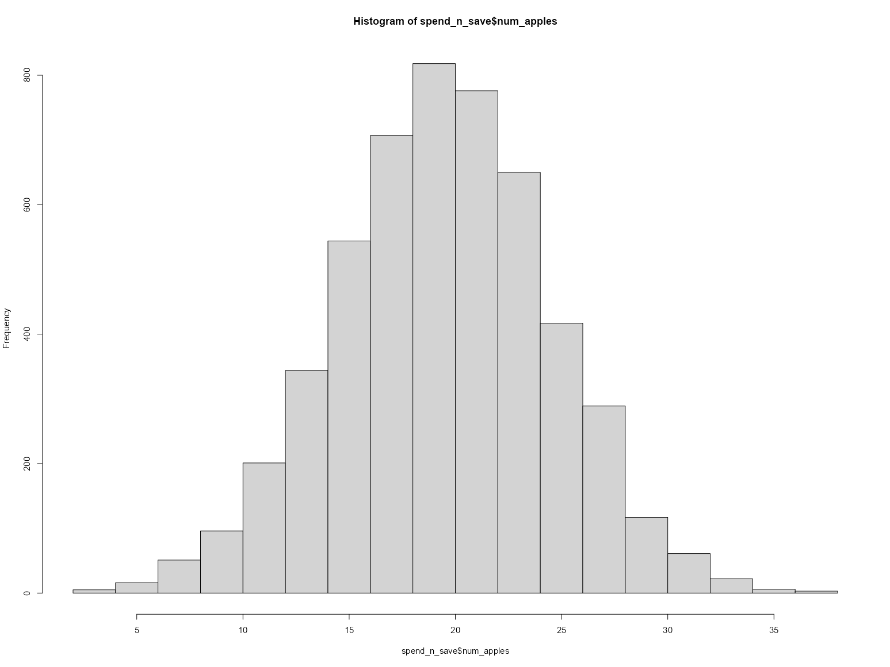
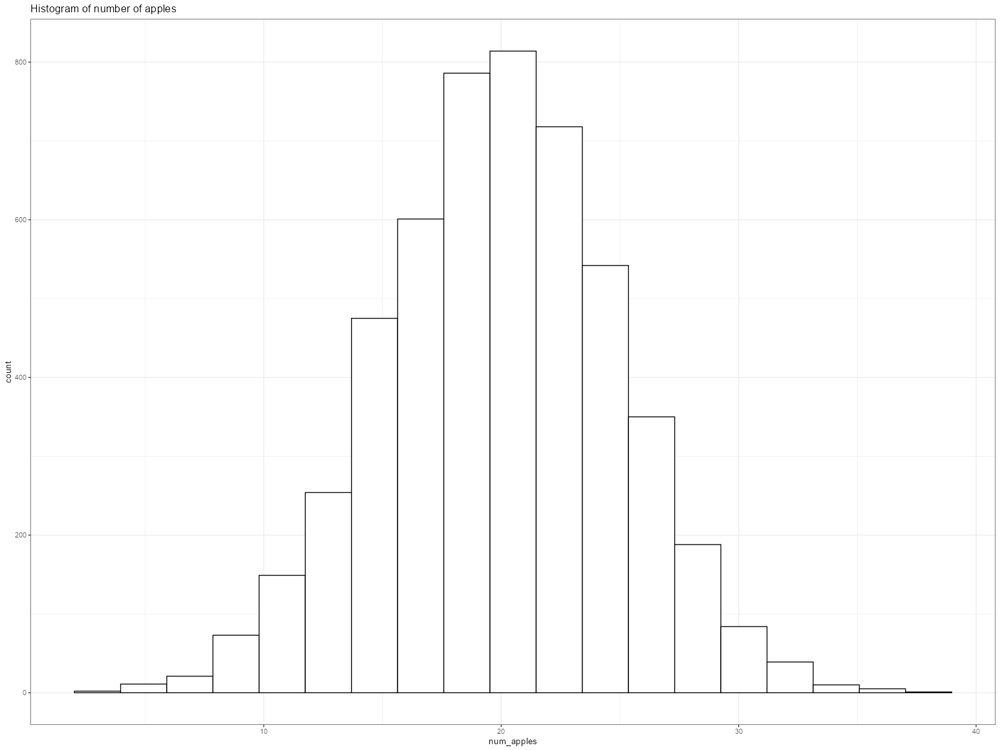
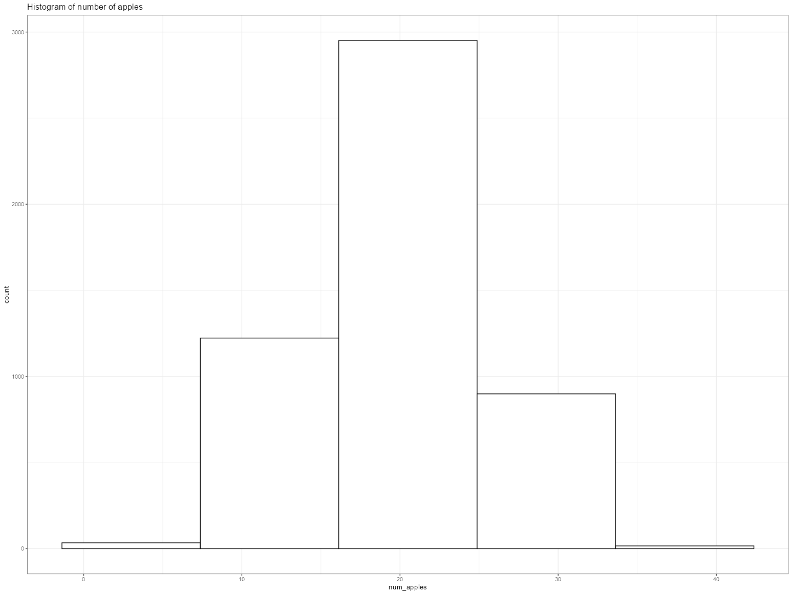
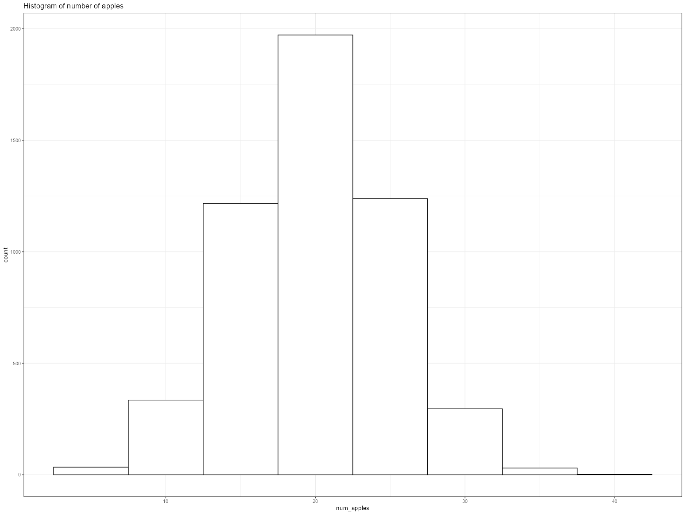
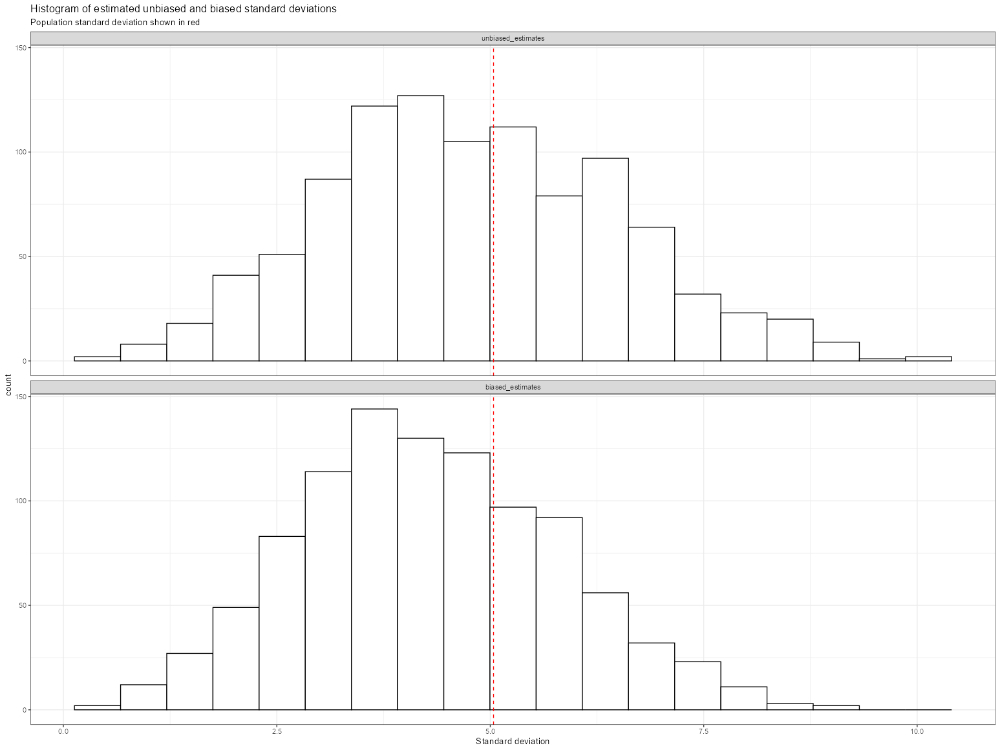

# If you need to install the packages, simply uncomment the lines below
#install.packages("pak")
#pak::pak("tidyverse")
#pak::pak("sfirke/janitor")
#pak::pak("kassambara/rstatix")A {tidy} companion to The StatQuest Illustrated Guide to Statistics
Chapter 02 - Visualizing Data and Calculating Probabilities with Histograms
This is the 2nd post in the Tidy StatQuest series:
The StatQuest Illustrated Guide to Statistics
| Chapter | Blog post | StatQuest notebook | Tidy notebook |
|---|---|---|---|
| 01 - Fundamental Concepts in Statistics!!! | link | link | link |
| 02 - Visualizing Data and Calculating Probabilities with Histograms!!! | link |
Set up
We’ll be using three packages: * {tidyverse} - import and manipulate data * {janitor} - clean data * {rstatix} - calculate statistics
For package installation, we use the {pak} package.
# Load packages
library(tidyverse)
library(janitor)
library(rstatix)── Attaching core tidyverse packages ────────────────────────────────────────────────────────────────────────────────────────────────────────────── tidyverse 2.0.0 ── ✔ dplyr 1.2.1 ✔ readr 2.2.0 ✔ forcats 1.0.1 ✔ stringr 1.6.0 ✔ ggplot2 4.0.3 ✔ tibble 3.3.1 ✔ lubridate 1.9.5 ✔ tidyr 1.3.2 ✔ purrr 1.2.2 ── Conflicts ──────────────────────────────────────────────────────────────────────────────────────────────────────────────────────────────── tidyverse_conflicts() ── ✖ dplyr::filter() masks stats::filter() ✖ dplyr::lag() masks stats::lag() ℹ Use the conflicted package to force all conflicts to become errors Attaching package: ‘janitor’ The following objects are masked from ‘package:stats’: chisq.test, fisher.test Attaching package: ‘rstatix’ The following object is masked from ‘package:janitor’: make_clean_names The following object is masked from ‘package:stats’: filter
We’ll be using the {ggplot2} package to create figures. We set the theme to theme_bw():
theme_set(theme_bw())Load the data and create a histogram
The data is available on the Github repository. We download it using the {readr} package:
file_url <- "https://raw.githubusercontent.com/StatQuest/sigs/refs/heads/main/chapter_01/spend_n_save.txt"
spend_n_save <- read_tsv(file_url) |>
# clean_names() default settings transform column names using snake case
clean_names() |>
# the 'id' variable is categorical, we transform it into a factor
mutate(id = factor(id))Rows: 5123 Columns: 2 ── Column specification ────────────────────────────────────────────────────────────────────────────────────────────────────────────────────────────────────────────── Delimiter: "\t" dbl (2): id, num.apples ℹ Use `spec()` to retrieve the full column specification for this data. ℹ Specify the column types or set `show_col_types = FALSE` to quiet this message.
Print out the first rows:
# Print out the first 5 rows
head(spend_n_save)# A tibble: 6 × 2 id num_apples <fct> <dbl> 1 1 27 2 2 17 3 3 22 4 4 23 5 5 22 6 6 19
When using the base R hist() functions, 19 bins are created.
p <- hist(spend_n_save$num_apples)
length(p$breaks)
[1] 19We use the {ggplot2} package to create a simple histogram
ggplot(data = spend_n_save) +
geom_histogram(aes(x = num_apples),
color = "black", fill = "white", bins = 19) +
labs(title = "Histogram of number of apples")
Save the plot
To export the plot to a .png, we use the ggsave() function, which takes 5 arguments:
filename: the name of the file where the plot will be exportedplot: the plot we wish to save (defaults to the last plot)dpi: plot resolution in pixelswidth: width of the plot in pixelsheight: height of the plot in pixels
We first save the plot as an R object, then save this object.
p <- ggplot(data = spend_n_save) +
geom_histogram(aes(x = num_apples),
color = "black", fill = "white", bins = 19) +
labs(title = "Histogram of number of apples")
ggsave(filename = "hist.png", plot = p,
dpi = 320, width = 12, height = 6)Change the bin sizes
With geom_histogram(), two arguments can be used adjust the number of bins:
bins: sets the number of bins
ggplot(data = spend_n_save) +
geom_histogram(aes(x = num_apples),
color = "black", fill = "white",
bins = 5) +
labs(title = "Histogram of number of apples")
bin_width: sets the width of each bin
ggplot(data = spend_n_save) +
geom_histogram(aes(x = num_apples),
color = "black", fill = "white",
binwidth = 5) +
labs(title = "Histogram of number of apples")
Calculating probabilities from the data
To calculate the probability of walking into a Spend-n-Savestore that sells at least 32 apples:
we filter the table to take the rows in which the
num_applesvariable has a value of at least 32using
nrow()we count the number of rows matching the filter
num_stores <- spend_n_save |>
filter(num_apples >= 32) |>
nrow()
# print out the result
num_stores[1] 55To calculate the probability, we divide num_stores by the total number or rows in the table, and round off the result:
round(num_stores / nrow(spend_n_save), 2)[1] 0.01Draw histograms of the estimated standard deviations we calculated in Chapter 1
We conduct the same experiment as in the 1st post: simulate 1,000 draws of 5 random values and calculate the biased and unbiased standard deviations.
We use the replicate() function, which takes two arguments:
nfor the number of replicatesexprfor the code describing the experiment
We modify the code from the first post to calculate the sum of squared residuals (ssr):
set.seed(42)
ssr <- replicate(
n = 1000,
expr = {
spend_n_save |>
slice_sample(n = 5) |>
summarise(ssr = sum((num_apples - mean(num_apples))^2)) |>
pull()
}
)We calculate the biased (square root of \(SSR\) divided by \(n\)) and unbiased (square root of \(SSR\) divided by \(n-1\)) standard deviations:
sd_biased <- sqrt(ssr/ 5)
sd_unbiased <- sqrt(ssr / 4)head(sd_biased)
head(sd_unbiased)[1] 2.774887 4.615192 2.000000 3.271085 4.037326 3.577709We print out the averages:
tibble(
sd_unbiased_mean = round(mean(sd_unbiased), 1),
sd_biased_mean = round(mean(sd_biased), 1)
)# A tibble: 1 × 2 sd_unbiased_mean sd_biased_mean <dbl> <dbl> 1 4.8 4.3
We calculate the mean, variance and standard deviation for the population of stores:
pop_stats <- spend_n_save |>
mutate(squared_error = (num_apples - mean(num_apples))^2) |>
summarise(pop_mean = mean(num_apples),
pop_var = mean(squared_error),
pop_sd = sqrt(pop_var))
pop_stats# A tibble: 1 × 3 pop_mean pop_var pop_sd <dbl> <dbl> <dbl> 1 19.9 25.4 5.04
Draw the histograms with the population standard deviation on top:
We first create a
tibble(the{tidyverse}’s dataframe) with two columns: one containing the unbiased standard deviations, the other containing the biased standard deviationsWe add a row id (
rowid_to_column())We pivot the table into a long format using
pivot_longer(), with two arguments:the rows to pivot (in this case, all columns except
rowid)the name the column containing the pivoted column names will take (
names_to)
We want the histograms to be in the following order: unbiased then biased. To achieve this we transform the
sdcolumn into a factor, with levels determined by the order of appearance of the classes, using the{forcats}package functionfct_inorder()We then initiate the plot with
ggplot()We create a histogram for both distributions
We add a vertical line showing the population standard deviation
Finally, we separate it into two histograms, based on the unbiased/biased classes using
facet_wrap(). To align the histograms vertically, we use thencolargument.
tibble(
unbiased_estimates = sd_unbiased,
biased_estimates = sd_biased
) |>
rowid_to_column() |>
pivot_longer(cols = -rowid,
names_to = "sd") |>
mutate(sd = fct_inorder(sd)) |>
ggplot() +
geom_histogram(aes(x = value),
color = "black", fill = "white",
bins = 19) +
geom_vline(xintercept = pop_stats$pop_sd,
col = "red", linetype = "dashed") +
facet_wrap(~sd, ncol= 1) +
labs(title = "Histogram of estimated unbiased and biased standard deviations",
subtitle = "Population standard deviation shown in red",
x = "Standard deviation")
Population Mean and Standard Deviation
Calculate the mean and standard deviation of the number of apples, using the {rstatix} package.
This function calculates different statistics for numerical variables. Since we transformed id into a factor, the code returns mean and standard deviation for num_apples. We use mutate() to round off the results.
pop_stats <- spend_n_save |>
get_summary_stats(type = "mean_sd") |>
mutate(across(where(is.double), ~ round(., 1)))
pop_stats| variable | n | mean | sd |
|---|---|---|---|
| <fct> | <dbl> | <dbl> | <dbl> |
| num_apples | 5123 | 19.9 | 5 |
Estimated Mean and Standard Deviation
We set the seed for random number generation using set.seed(42).
The slice_sample() function randomly picks n rows in a dataframe.
We then apply get_summary_stats() to the subset.
set.seed(42)
est_stats <- spend_n_save |>
slice_sample(n = 5) |>
get_summary_stats(type = "mean_sd") |>
mutate(across(where(is.double), ~ round(., 1)))
est_stats| variable | n | mean | sd |
|---|---|---|---|
| <fct> | <dbl> | <dbl> | <dbl> |
| num_apples | 5 | 21.2 | 2.8 |
To calculate the biased standard deviation, we use the est_stats table we just created, and then: * we rename the sd variable to sd_unbiased using the rename() function * we calculate the biased standard deviation using the following formula:
\[ biased\ sd= \sqrt{(unbiased\ sd)^2 \ \times \frac{n-1}{n}} \]
- we round off the results
est_stats |>
rename(sd_unbiased = sd) |>
mutate(sd_biased = sqrt(sd_unbiased^2 * (n - 1) / n)) |>
mutate(across(where(is.double), ~ round(., 1)))| variable | n | mean | sd_unbiased | sd_biased |
|---|---|---|---|---|
| <fct> | <dbl> | <dbl> | <dbl> | <dbl> |
| num_apples | 5 | 21.2 | 2.8 | 2.5 |
Simulate biased and unbiased estimates
After setting the seed, we replicate 1,000 experiments consisting in the following steps:
- Draw 5 random rows from the table
- Calculate the variance for
num_apples - Store the 1,000 computed unbiased variances
We use the replicate() function, which takes two arguments:
nfor the number of replicatesexprfor the code describing the experiment
set.seed(42)
var_unbiased <- replicate(
n = 1000,
expr = {
spend_n_save |>
slice_sample(n = 5) |>
summarise(var_unbiased = var(num_apples)) |>
pull()
}
)Display the first 10 unbiased variances:
head(var_unbiased, 10)- 7.7
- 21.3
- 4
- 10.7
- 16.3
- 12.8
- 17.7
- 13.8
- 6.3
- 55.3
We then create a table to summarise the results:
n = 5(we want to usenrather than hard-code the values when computing the biased statistics)- a column containing the 1,000 unbiased variances
Using mutate(), we then:
- calculate the unbiased standard deviation using the square-root of the unbiased variance
- calculate the biased variance using the formula above
- calculate the biased standard deviation using the square-root of the biased variance
Finally, we use summarise() to calculate the means of the biased and unbiased standard deviations from the 1,000 experiments.
tibble(
n = 5,
var_unbiased = var_unbiased
) |>
mutate(
sd_unbiased = sqrt(var_unbiased),
var_biased = var_unbiased * (n - 1) / n,
sd_biased = sqrt(var_biased)
) |>
summarise(
mean_sd_unbiased = round(mean(sd_unbiased), 1),
mean_sd_biased = round(mean(sd_biased), 1)
)| mean_sd_unbiased | mean_sd_biased |
|---|---|
| <dbl> | <dbl> |
| 4.8 | 4.3 |